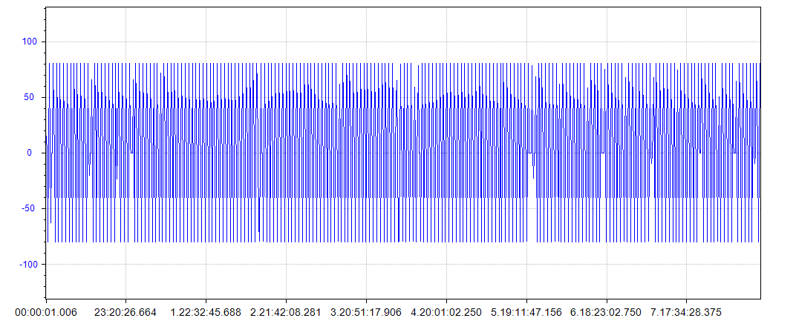
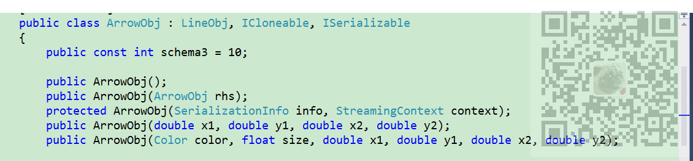

在ZedGraph的曲线图上，双击图时会在图形上生成箭头符号标记。

注：
博客主页：
https://blog.csdn.net/badao_liumang_qizhi
关注公众号
霸道的程序猿
获取编程相关电子书、教程推送与免费下载。
首先在ZedGraph所在的窗体的load事件中对ZedGraph的鼠标双击事件进行重写
zgc.DoubleClickEvent -= zgc_DoubleClickEvent; //鼠标双击事件订阅
zgc.DoubleClickEvent += zgc_DoubleClickEvent; //鼠标双击事件订阅然后在具体订阅的事件实现中
private static bool zgc_DoubleClickEvent(ZedGraphControl sender, MouseEventArgs e)
{
//获取(ZedGraphControl 对象
ZedGraphControl zgc = sender as ZedGraphControl;
if (zgc != null)
{
try
{
//获取鼠标焦点距离最近的点所在的曲线以及在曲线上的点的索引
PointF mousePt = new PointF(e.X, e.Y);
CurveItem nearstCurve;
int i;
zgc.GraphPane.FindNearestPoint(mousePt, out nearstCurve, out i);
if (nearstCurve != null && nearstCurve.Points[i] != null)
{
//获取鼠标焦点距离最近的点的坐标
Double x = nearstCurve.Points[i].X;
Double y = nearstCurve.Points[i].Y;
string title = nearstCurve.Points[i].Tag as string;
#region 添加箭头标记
ArrowObj myArrow = new ArrowObj(Color.FromArgb(0xA0, 0x00, 0x00), 20, i + 1, zgc.GraphPane.YAxisList[0].Scale.Min, i + 1,
zgc.GraphPane.YAxisList[0].Scale.Max);
myArrow.Line.Style = System.Drawing.Drawing2D.DashStyle.Dash;
myArrow.Line.DashOff = 1;
myArrow.Line.DashOn = 1;
myArrow.ZOrder = ZOrder.B_BehindLegend;
zgc.GraphPane.GraphObjList.Clear();
zgc.GraphPane.GraphObjList.Add(myArrow);
#endregion
}
return true;
}
catch(Exception ex)
{
ICSharpCode.Core.LoggingService<DataChartHelper>.Error("zgc_DoubleClickEvent exception:" + ex.Message, ex);
return false;
}
}
else
{
return false;
}
}
注：
首先获取距离鼠标焦点最近的点以及所在的曲线。
然后根据距离最近的点的横纵坐标使用ArrowObj 对象生成线。
ArrowObj ：表示图形上的图形箭头或线对象的类。ArrowObj对象的列表由GraphObjList集合类维护。
ArrowObj 的构造方法为：

第一个参数为颜色对象，第二个参数为大小，后面四个参数用于定位，两点确定一条直线，两个坐标确定一个点，所以是四个坐标确定一条线。
前两个确定一个点，后两个确定一个点。
在代码中使用的是：
ArrowObj myArrow = new ArrowObj(Color.FromArgb(0xA0, 0x00, 0x00), 20, i + 1, zgc.GraphPane.YAxisList[0].Scale.Min, i + 1,
zgc.GraphPane.YAxisList[0].Scale.Max);第一个点是在X轴上点，其坐标为上面距离鼠标焦点最近的点的横坐标+1,Y轴刻度的最小值。
第二个点坐标横坐标一样，纵坐标是Y轴刻度的最大值。